Estrich reparieren
Risse, Hohllagen und Ausbrüche werden geprüft und fachgerecht instand gesetzt, bevor unnötig alles entfernt wird.
Von der kaputten Estrich-Ecke bis zum fertigen Boden: ehrlich beraten, sauber vorbereitet und präzise verlegt.
Anfrage senden ↗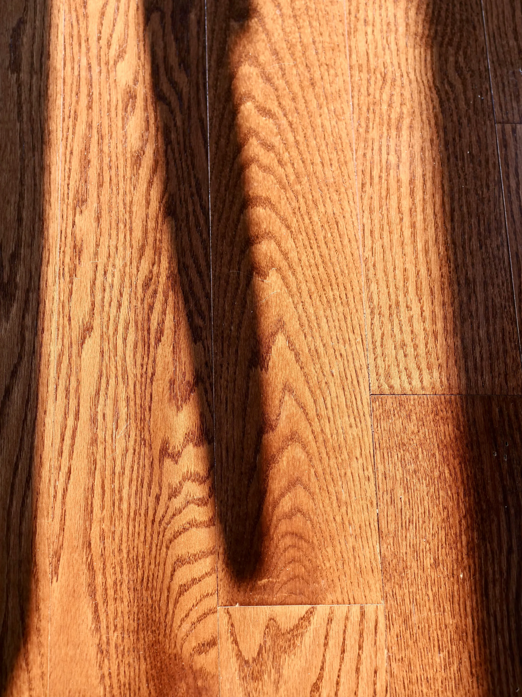
„Ein guter Boden beginnt nicht mit dem Belag. Er beginnt mit einem Untergrund, auf den man sich verlassen kann.
Eine wachsende Auswahl ausgeführter Böden.
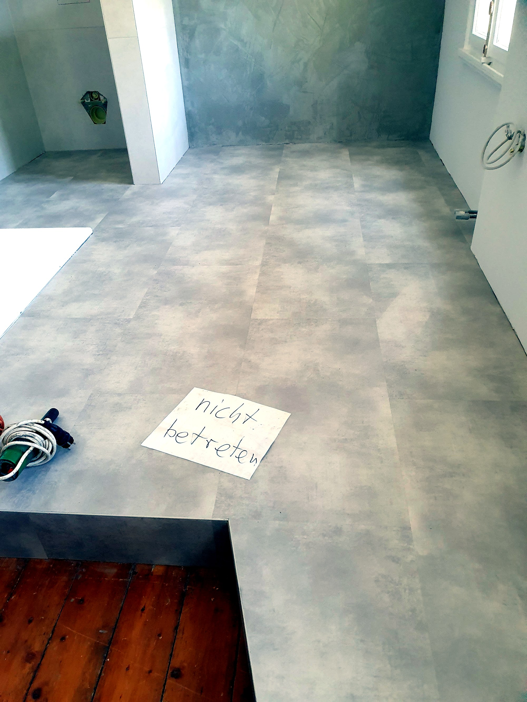
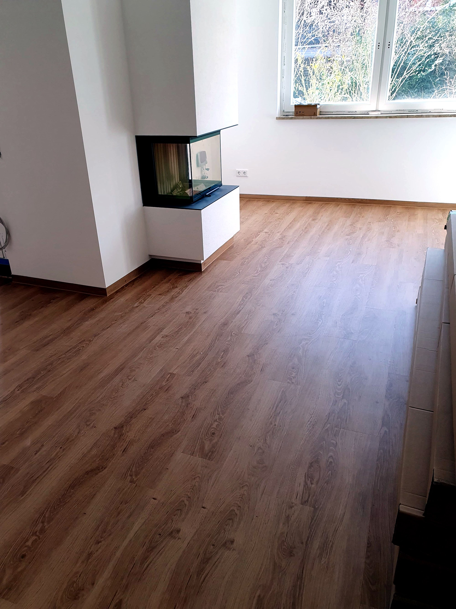
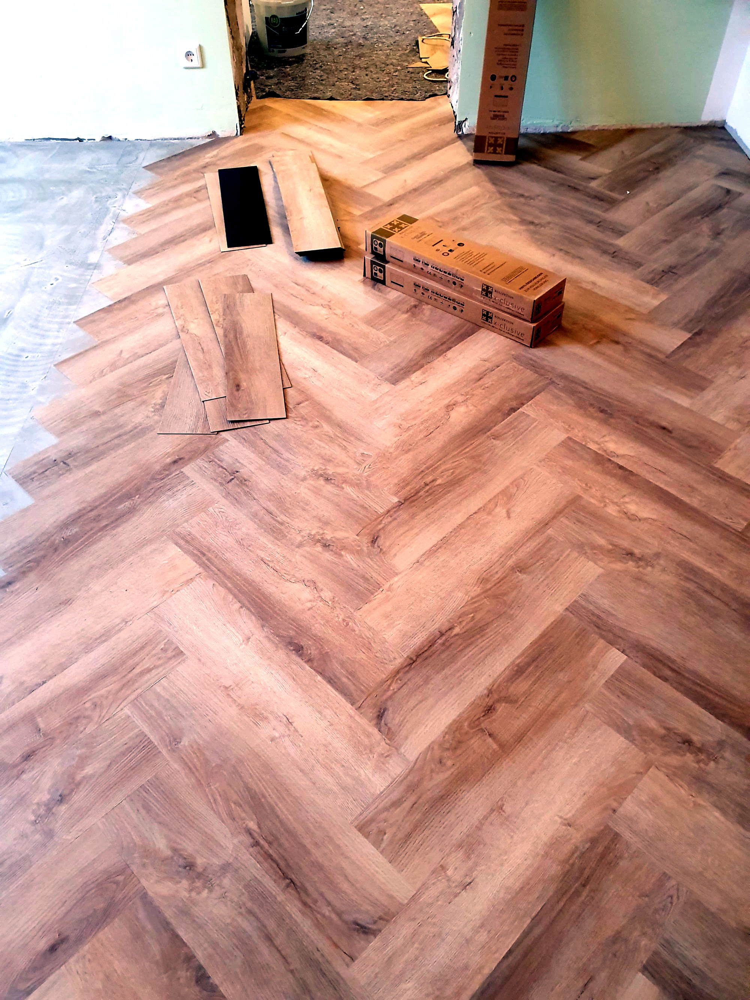
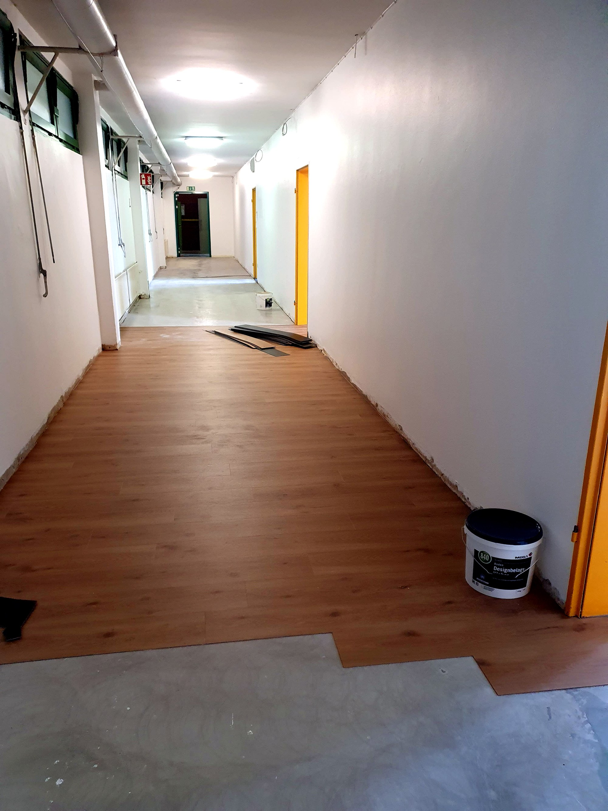
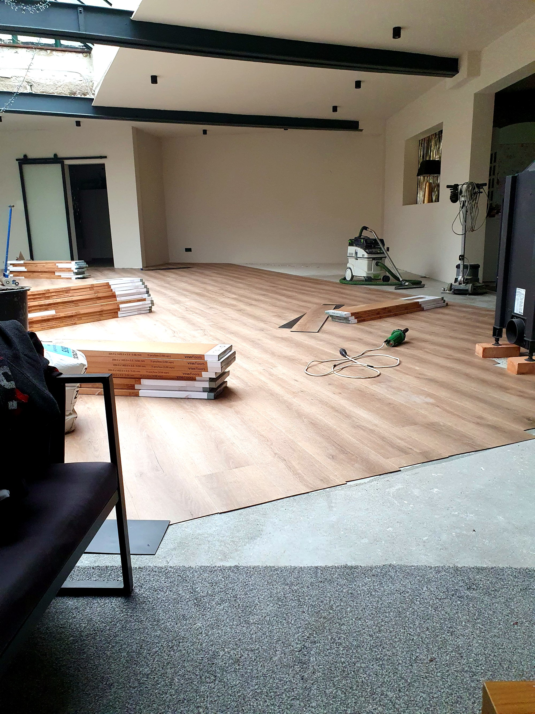
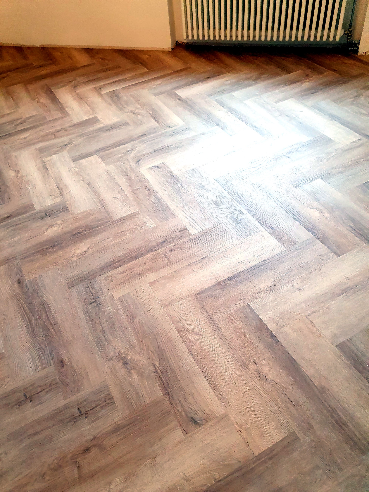
Risse, Hohllagen und Ausbrüche werden geprüft und fachgerecht instand gesetzt, bevor unnötig alles entfernt wird.
Schleifen, grundieren, spachteln und Ebenheit herstellen – damit der neue Belag dauerhaft sicher liegt.
Parkett, Designbelag, Vinyl, Linoleum, Kork, Kautschuk, Laminat und PVC – sauber und passgenau.
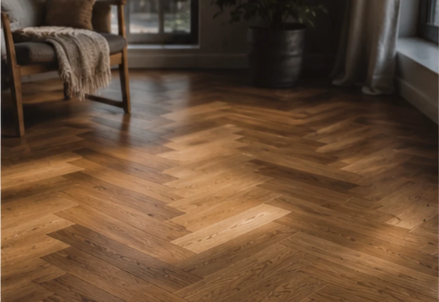
Warm, wertig und langlebig. Parkett bringt Ruhe in den Raum und kann – passend zu Nutzung und Untergrund – vollflächig verklebt oder schwimmend verlegt werden.
Projekt besprechen →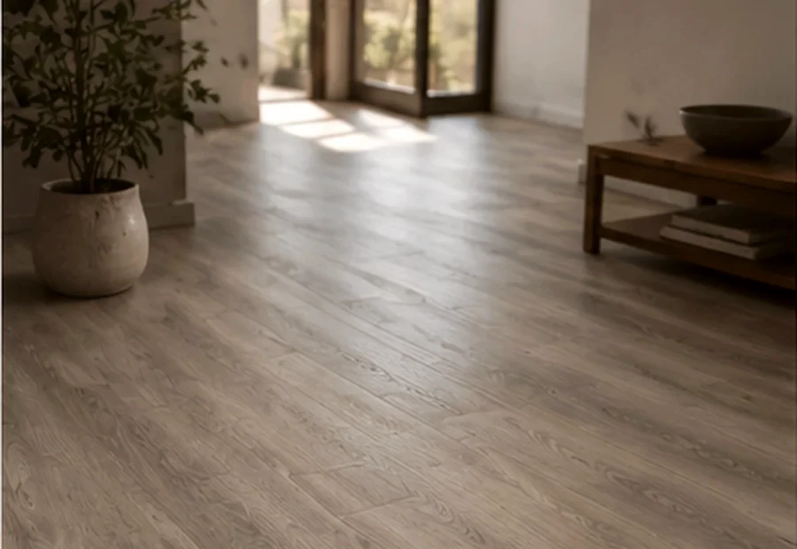
Pflegeleicht, robust und in vielen Oberflächen erhältlich. Ideal für Wohnräume, Flure und stark beanspruchte Bereiche.
Material anfragen →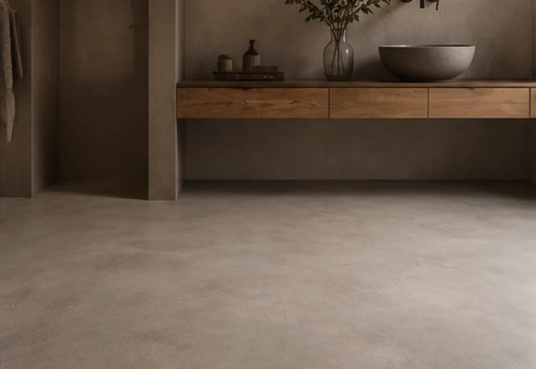
Elastische und natürliche Lösungen mit besonderen Eigenschaften – von fußwarm und leise bis extrem belastbar und pflegeleicht.
Passende Lösung finden →Sie senden Raumgröße, Wunsch und erste Bilder.
Untergrund, Feuchte, Höhen und Anschlüsse werden geprüft.
Sie erhalten eine nachvollziehbare Aufstellung der Arbeiten.
Verlegung, Abschluss und gemeinsame Abnahme.
Ich verlege Parkett, Designbeläge und Vinyl, PVC, Laminat, Linoleum, Kork und Kautschuk. Welcher Belag sinnvoll ist, hängt vom Raum, der Beanspruchung, dem Untergrund, der gewünschten Optik und Ihrem Budget ab – deshalb steht vor der Auswahl immer eine ehrliche Beratung.
Ja. Ein Boden kann nur so gut sein wie der Untergrund darunter. Ich prüfe Estrich und vorhandene Flächen, repariere schadhafte Stellen und übernehme bei Bedarf Schleifen, Grundieren, Spachteln und das Herstellen einer ebenen, tragfähigen Verlegefläche.
Nein, nicht automatisch. Manche Altbeläge können erhalten, aufgearbeitet oder nach fachlicher Prüfung als geeignete Grundlage genutzt werden. Vor Ort beurteile ich Zustand, Aufbau und Haftung und erkläre Ihnen, welche Lösung technisch sinnvoll und wirtschaftlich vernünftig ist.
Ja. Ich erläutere Ihnen die Unterschiede bei Pflege, Haltbarkeit, Raumwirkung, Feuchtebeständigkeit und Fußbodenheizung. Dabei empfehle ich nicht das teuerste Material, sondern den Boden, der langfristig zu Ihrem Raum und Ihrem Alltag passt.
Mein Schwerpunkt liegt in Wermelskirchen und im Bergischen Land. Je nach Umfang und Entfernung übernehme ich auch Projekte in den angrenzenden Regionen. Einsatzort und Projektgröße klären wir am besten kurz telefonisch.
Nach einer ersten Abstimmung vereinbaren wir in der Regel einen Termin zum Aufmaß. Dabei prüfe ich Flächen, Übergänge und Untergrund und bespreche die gewünschten Leistungen. Anschließend erhalten Sie ein nachvollziehbares Angebot mit den vorgesehenen Arbeiten und Materialien.
Das hängt von Fläche, Belag und Untergrund ab. Eine reine Verlegung kann oft zügig erfolgen; Reparaturen, Spachtelarbeiten, Trocknungszeiten oder aufwendige Verlegemuster benötigen mehr Zeit. Nach dem Aufmaß kann ich den Ablauf realistisch einschätzen und mit Ihnen abstimmen.
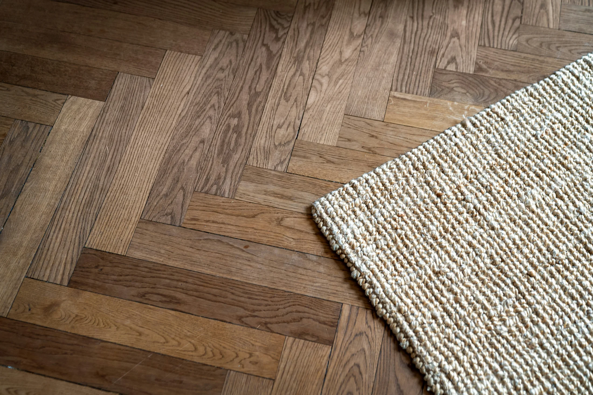
Schicken Sie kurz die wichtigsten Informationen und gern direkt Bilder vom Raum oder Untergrund.